class: center, middle, title-slide # CSCI-UA 102 ## Data Structures <br> ## Lists .author[ Instructor: Joanna Klukowska <br><br><br> ] .license[ Copyright 2020 Joanna Klukowska. Unless noted otherwise all content is released under a <br> [Creative Commons Attribution-ShareAlike 4.0 International License](https://creativecommons.org/licenses/by-sa/4.0/).<br> Background image by Stewart Weiss<br>] --- layout:true template: default name: section class: inverse, middle, center --- layout:true template: default name: poll class: inverse, full-height, center, middle --- layout:true template: default name: breakout class: breakout, middle --- layout:true template:default name:slide class: slide .bottom-left[© Joanna Klukowska. CC-BY-SA.] --- template: section # Abstraction --- ## What is abstraction (in computer science)? <a title="Tomwsulcer / CC0" href="https://commons.wikimedia.org/wiki/File:Generalization_process_using_trees_PNG_version.png"> <img width="180px" style="float:right; padding:10px" alt="Generalization process using trees PNG version" src="https://upload.wikimedia.org/wikipedia/commons/f/f3/Generalization_process_using_trees_PNG_version.png"> </a> <br><br> In general, __abstraction__ is a conceptual process where general rules and concepts are derived from generalization of specific examples. .small[ __Example:__ In the image on the right, the _tree_ on the bottom is an abstraction of a tree - it resembles the actual trees just enough to convey a message of being a tree without containing any details of what specific tree it might be (which in many situations might be irrelevant). ] -- In computer science, __abstraction__ is a process of hiding details of implementation in programs and data. .small[ - because such details are irrelevant and distract from the important concepts - because the user/client of a given code/system does not need to know the details in order to use the code/system effectively. ] -- An __abstract data type (ADT)__ is the specification of a data type (a set of values and a collection of operations on those values), independent of its implementation. <br> - an ADT's operations can be used without knowing their implementations or how the data is stored, as long as the interface to the ADT is precisely specified - an ADT is implementation independent in many different ways - a language independent ADT can be implemented in different programming languages - a language dependent ADT is a way of describing an ADT using a particular programming language, for example, an interface in Java --- ## A List ADT __Intuitive list__ - a collection of elements with some notion of position information for each element - operations: - add/remove at specified positions, - find an element in the list (or determine that it is not there) - retrieve an element from a particular position - determine the length of the list - empty the list -- __A List ADT__ - values stored - the list of elements itself - size - current number of elements in the list - operations - `add(item, pos)` - adds an element at position pos, restriction: 0 <= pos < size, shifts elements starting at pos one to the right (higher position values) - `remove(pos)` - removes and returns an element at position pos, restriction: 0 <= pos < size, shifts elements starting at pos+1 one to the left (lower position values) - `find(item)` - determines if the item is in the list and if so returns its position, otherwise returns -1 - `get(pos)` - retrieves and returns an item from position pos, restriction: 0 <= pos < size - `size()` - returns the current number of elements in the list, i.e. size - `clear()` - removes all elements from the list, and reset size to 0 --- ## A List ADT in Java ```Java // List ADT public interface List<E> { // adds an element 'it' at position pos, shifts elements starting at pos by // one position to the right (higher position values) // throws NoSuchElementException if pos < 0 or pos >= size public boolean add(E it, int pos) throws NoSuchElementException; // removes and returns an element at position pos, shifts elements starting // at pos+1 by one to the left (lower position values) // throws NoSuchElementException if pos < 0 or pos >= size public E remove(int pos) throws NoSuchElementException; // determines if 'it' is in the list and if so returns its position, // otherwise returns -1 public int find (E it) ; // retrieves and returns an item from position pos // throws NoSuchElementException if pos < 0 or pos >= size public E get( int pos) throws NoSuchElementException; // returns the current number of elements in the list public int size(); // removes all elements from the list, so it is once again empty public void clear(); } ``` --- ## Java's own List ADT Java provides its own [`List` interface](https://docs.oracle.com/en/java/javase/11/docs/api/java.base/java/util/List.html) that is implemented by several built in classes, among them the `ArrayList<E>` class. --- template: section # List Implementations --- ## Specific List Implementations A given list ADT can be implemented using different designs and approaches. <img width="450px" style="float:right;padding:10px" src="img/05/lists.jpg" > <br><br> We usually consider two different ways of implementing a list: - using an array as an underlying storage - using a reference based structure as an underlying storage .below-column2[ The differences in how the operations are implemented reflect the differences in how the elements are stored. ] --- template: section # Reference Based Implementation ## a.k.a. Linked List --- ## Adding to the list In order to add an element to the list we first need to create a new `Node`: .center80[ `Node n = new Node();` ] -- Then, depending on the location at which we are adding, we may consider three separate cases: - adding to the front of a list - adding to the end of a list - adding at some position in between -- We also need to make sure that our algorithm for adding works in case of an empty list, one-element list and a list with many elements. --- ## An Empty List In an empty list, both `head` and `tail` references point to nothing. In this case, we need to make them both point to the newly created node: .center80[ ``` Node n = new Node(); head = n; tail = n; ``` ] --- name: add-front ## Adding to the front of a list What is the sequence of steps required to add to the beginning of a list? --- template: add-front .center[ ] .center80[ `Node n = new Node();` ] --- template: add-front .center[ 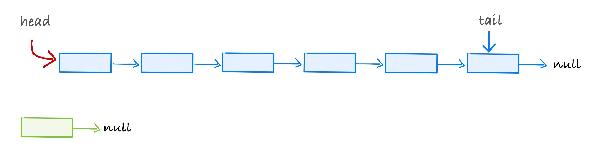 ] .center80[ `Node n = new Node();` <br> `head = n; `<br> ] --- template: add-front .center[ 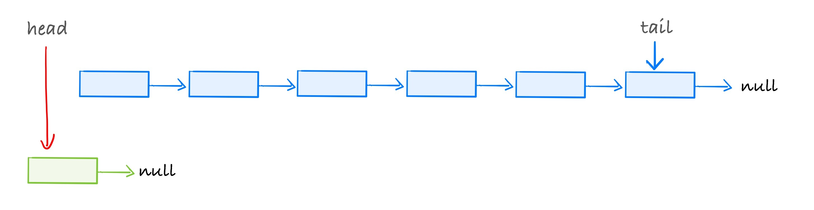 ] .center80[ `Node n = new Node();` <br> `head = n; `<br> ] --- template: add-front .center[ <img alt="add to front of a list" src="img/05/add-front-14.jpg" width=700px /> ] .center80[ `Node n = new Node();` <br> `head = n; `<br> ] --- template: add-front .center[ 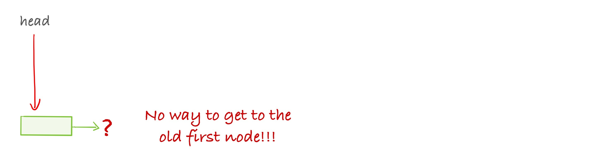 ] .center80[ `Node n = new Node();` <br> <span style="text-decoration: line-through red;">`head = n; `</span><br> ] If we change where the `head` to point to the newly created node, the rest of the list is lost and cannot be recovered. --- template: add-front .center[ 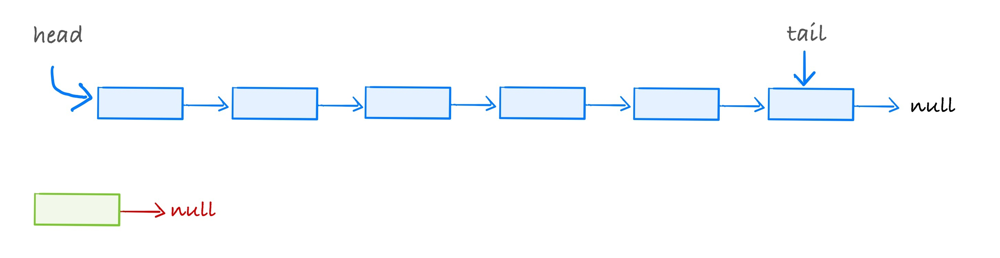 ] .center80[ `Node n = new Node();` <br> `n.next = head`<br> ] --- template: add-front .center[ 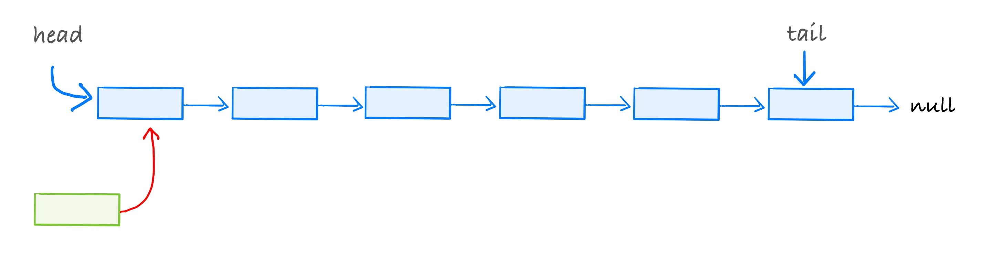 ] .center80[ `Node n = new Node();` <br> `n.next = head`<br> ] --- template: add-front .center[ <img alt="add to front of a list" src="img/05/add-front-18.jpg" width=700px /> ] .center80[ `Node n = new Node();` <br> `n.next = head`<br> ] --- template: add-front .center[ 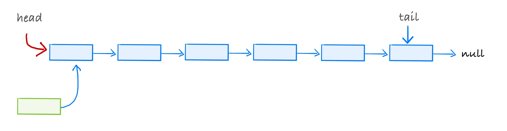 ] .center80[ `Node n = new Node();` <br> `n.next = head`<br> `head = n` <br> ] --- template: add-front .center[ 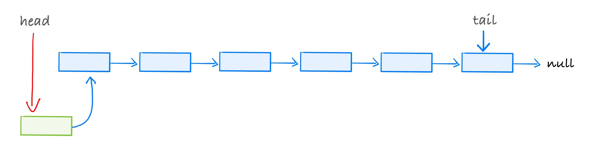 ] .center80[ `Node n = new Node();` <br> `n.next = head`<br> `head = n` <br> ] --- template: add-front .center[ <img alt="add to front of a list" src="img/05/add-front-21.jpg" width=700px /> ] .center80[ `Node n = new Node();` <br> `n.next = head`<br> `head = n` <br> ] --- name: add-back ## Adding to the end of a list What is the sequence of steps required to add to the end of a list? --- template: add-back .center[ 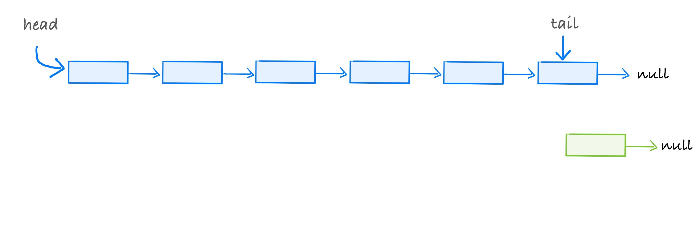 ] .center80[ `Node n = new Node(); ` <br> ] --- template: add-back .center[ 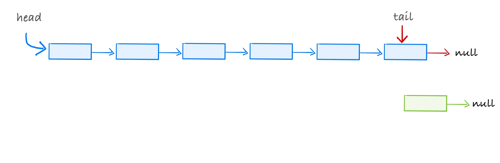 ] .center80[ `Node n = new Node(); ` <br> `tail.next = n;`<br> ] --- template: add-back .center[ 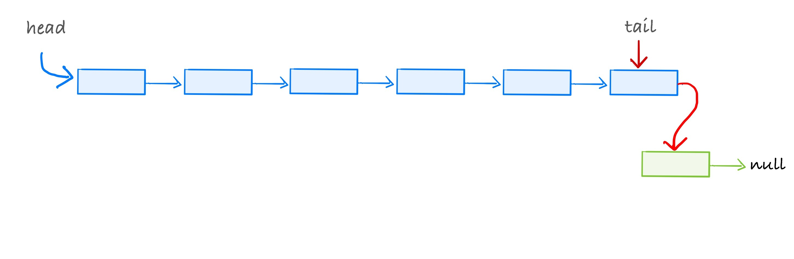 ] .center80[ `Node n = new Node(); ` <br> `tail.next = n;`<br> ] --- template: add-back .center[ 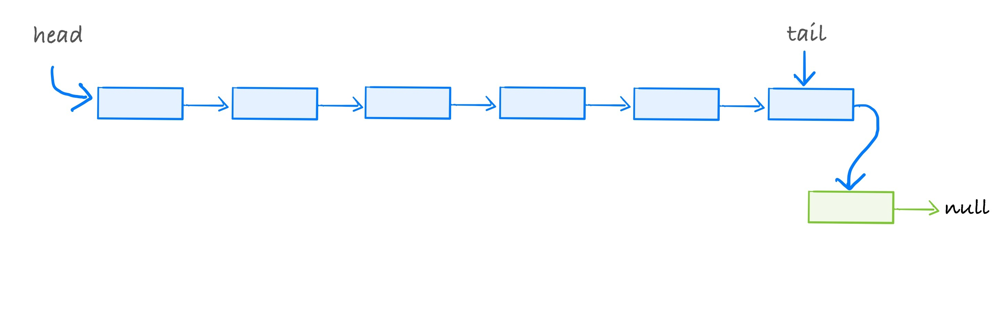 ] .center80[ `Node n = new Node(); ` <br> `tail.next = n;`<br> ] --- template: add-back .center[ <img alt="add to front of a list" src="img/05/add-back-8.jpg" width=700px /> ] .center80[ `Node n = new Node(); ` <br> `tail.next = n;`<br> `tail = tail.next` <br> ] --- template: add-back .center[ 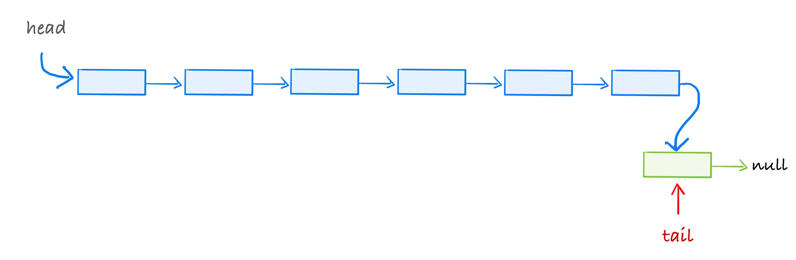 ] .center80[ `Node n = new Node(); ` <br> `tail.next = n;`<br> `tail = tail.next` <br> ] --- template: add-back .center[ <img alt="add to front of a list" src="img/05/add-back-10.jpg" width=700px /> ] .center80[ `Node n = new Node(); ` <br> `tail.next = n;`<br> `tail = tail.next` <br> ] --- name: add-index ## Adding to an arbitrary position in a list What is the sequence of steps required to add to an arbitrary position in a list? - determined by index - determined by ordering of elements - ... --- template: add-index .center[ <img alt="add to front of a list" src="img/05/add-index-22.jpg" width=700px /> ] `Node n = new Node(); ` <br> --- template: add-index .center[ <img alt="add to front of a list" src="img/05/add-index-23.jpg" width=700px /> ] `Node n = new Node(); ` <br> --- template: add-index .center[ 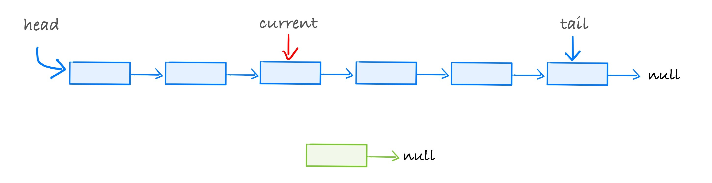 ] `Node n = new Node(); ` <br> `Node current = head ` <br> `//advance current to the node BEFORE the position at which be want to add` <br> --- template: add-index .center[ <img alt="add to front of a list" src="img/05/add-index-25.jpg" width=700px /> ] `Node n = new Node(); ` <br> `Node current = head ` <br> `//advance current to the node BEFORE the position at which be want to add` <br> --- template: add-index .center[ <img alt="add to front of a list" src="img/05/add-index-26.jpg" width=700px /> ] `Node n = new Node(); ` <br> `Node current = head ` <br> `//advance current to the node BEFORE the position at which be want to add` <br> `n.next = current.next` <br> --- template: add-index .center[ <img alt="add to front of a list" src="img/05/add-index-27.jpg" width=700px /> ] `Node n = new Node(); ` <br> `Node current = head ` <br> `//advance current to the node BEFORE the position at which be want to add` <br> `n.next = current.next` <br> --- template: add-index .center[ 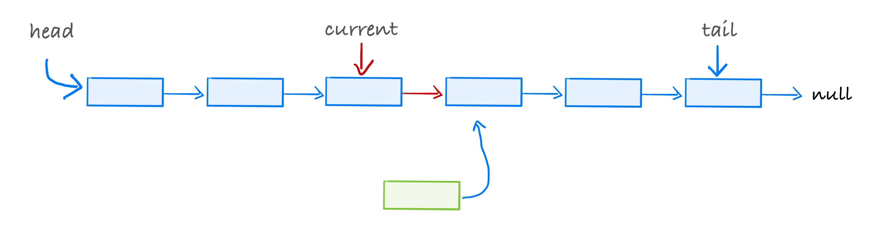 ] `Node n = new Node(); ` <br> `Node current = head ` <br> `//advance current to the node BEFORE the position at which be want to add` <br> `n.next = current.next` <br> `current.next = n` <br> --- template: add-index .center[ <img alt="add to front of a list" src="img/05/add-index-29.jpg" width=700px /> ] `Node n = new Node(); ` <br> `Node current = head ` <br> `//advance current to the node BEFORE the position at which be want to add` <br> `n.next = current.next` <br> `current.next = n` <br> --- template: add-index .center[ 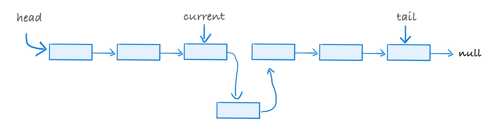 ] `Node n = new Node(); ` <br> `Node current = head ` <br> `//advance current to the node BEFORE the position at which be want to add` <br> `n.next = current.next` <br> `current.next = n` <br> --- template: add-index .center[ <img alt="add to front of a list" src="img/05/add-index-31.jpg" width=700px /> ] `Node n = new Node(); ` <br> `Node current = head ` <br> `//advance current to the node BEFORE the position at which be want to add` <br> `n.next = current.next` <br> `current.next = n` <br> --- template: breakout ### Group Discussion: Putting it all together? With your group, try to come up with a single Java method that implements the `add` method from our interface: ```Java // adds an element 'it' at position pos, shifts elements starting at pos by // one position to the right (higher position values) // throws NoSuchElementException if pos < 0 or pos >= size public boolean add(E it, int pos) throws NoSuchElementException; ``` You will need to use all of the code fragments from the previous slides, plus a bit more to locate the position. Assume that there is a `size` data field that keeps track of the exact number of elements in the list. Make sure that your function works when the list is empty, when it has only one element, and when it has many elements. --- </optgroup>